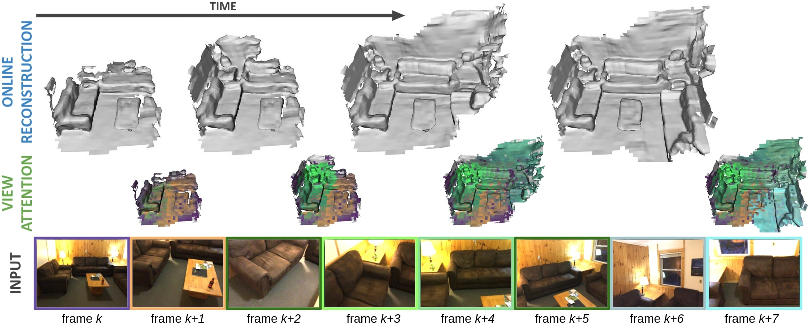
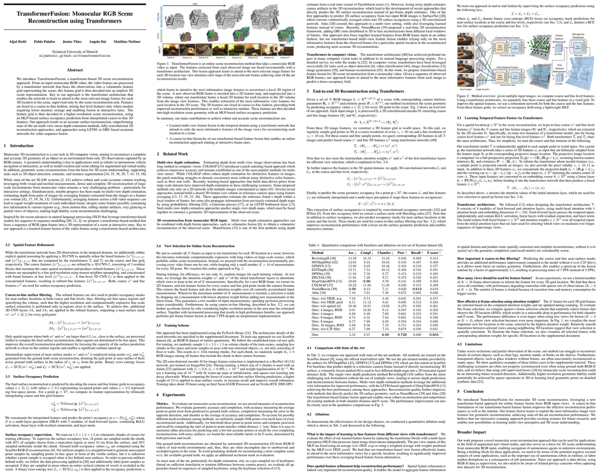

TransformerFusion
Monocular RGB Scene Reconstruction using Transformers
Technical University of Munich

Video
Abstract
We introduce TransformerFusion, a transformer-based 3D scene reconstruction approach. From an input monocular RGB video, the video frames are processed by a transformer network that fuses the observations into a volumetric feature grid representing the scene; this feature grid is then decoded into an implicit 3D scene representation. Key to our approach is the transformer architecture that enables the network to learn to attend to the most relevant image frames for each 3D location in the scene, supervised only by the scene reconstruction task. Features are fused in a coarse-to-fine fashion, storing fine-level features only where needed, requiring lower memory storage and enabling fusion at interactive rates. The feature grid is then decoded to a higher-resolution scene reconstruction, using an MLP-based surface occupancy prediction from interpolated coarse-to-fine 3D features. Our approach results in an accurate surface reconstruction, outperforming state-of-the-art multi-view stereo depth estimation methods, fully-convolutional 3D reconstruction approaches, and approaches using LSTM- or GRU-based recurrent networks for video sequence fusion.
Publication
 If you find our project useful, please consider citing us:
@article{bozic2021transformerfusion,
title={TransformerFusion: Monocular RGB Scene Reconstruction using Transformers},
author={Bo{\v{z}}i{\v{c}}, Alja{\v{z}} and Palafox, Pablo and Thies, Justus and Dai, Angela and Nie{\ss}ner, Matthias},
journal={arXiv},
year={2021}
}